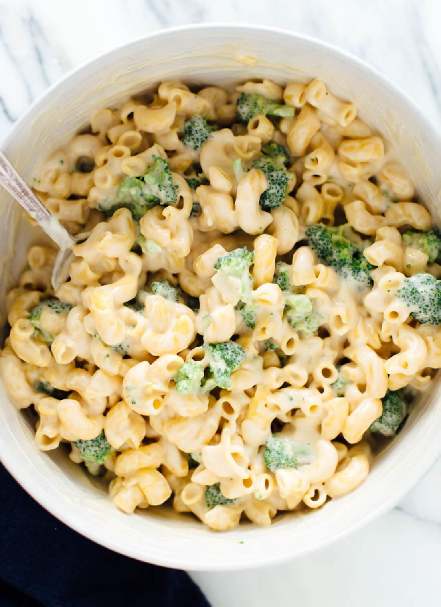

Vegan Mac n Cheese

Description
From one cheese lover to another, I’m here to tell you that
this mac and “cheese” is remarkably cheese-like and absolutely delicious.
Vegans, dairy-free friends, and cheese lovers who crave a more
redeeming mac and cheese recipe, this recipe is for you.
Ingredients
- 8 oz Macaroni Elbows
- 1 Broccoli
- 1 1/2 Tablespoons Avocado Oil
- 1 Small Yellow Onion
- 1 Cup Peeled Potato
- 3 Cloves Garlic
- 1/2 teaspoon Onion Powder
- 1/2 teaspoon Garlic Powder
- 1/2 teaspoon Dry Mustard Powder
- 1/2 teaspoon Fine Sea Salt
- Pinch of Red Pepper Flakes
- 2/3 cup Raw Cashews
- 1/4 Nutritional Yeast
- 2 teaspoons apple cider vinegar
Steps
- Bring a large pot of salted water to boil for the pasta. Cook according
to package directions. If using broccoli, stir it into the pot when just
2 to 3 more minutes remain. Drain, and transfer the contents to a large serving bowl.
- Meanwhile, in a medium-to-large saucepan, warm the oil over medium heat.
Add the onion and a pinch of salt and cook, stirring often, until the
onion is tender and turning translucent, about 5 minutes.
- Add the grated potato, garlic, garlic powder, onion powder, mustard powder,
salt and red pepper flakes. Stir to combine, and cook, stirring constantly,
for about 1 minute to enhance their flavors.
- Add the cashews and water, and stir to combine. Let the mixture come to a
simmer. Continue simmering, stirring frequently and reducing heat as necessary
to avoid a rapid boil, until the potatoes are completely tender and cooked through,
about 5 to 8 minutes.
- Carefully pour the mixture into a blender. Add the nutritional yeast and 2 teaspoons
vinegar. Blend until the mixture is completely smooth, about 2 minutes, stopping to
scrape down the sides if necessary. If the mixture won’t blend easily or if you would
prefer a thinner consistency, add water in ¼ cup increments, blending after each one.
- Taste, and blend in additional salt until the sauce is utterly irresistible
(I typically add at least another ½ teaspoon). If it needs a little more zip, add the
remaining teaspoon of vinegar. Blend again.
- Pour the sauce into the bowl of pasta. Stir until well combined, and serve immediately.
Leftovers keep well, chilled and covered, for 3 to 4 days. Gentle reheat, adding a tiny
splash of water if necessary to loosen up the sauce.
Main Page